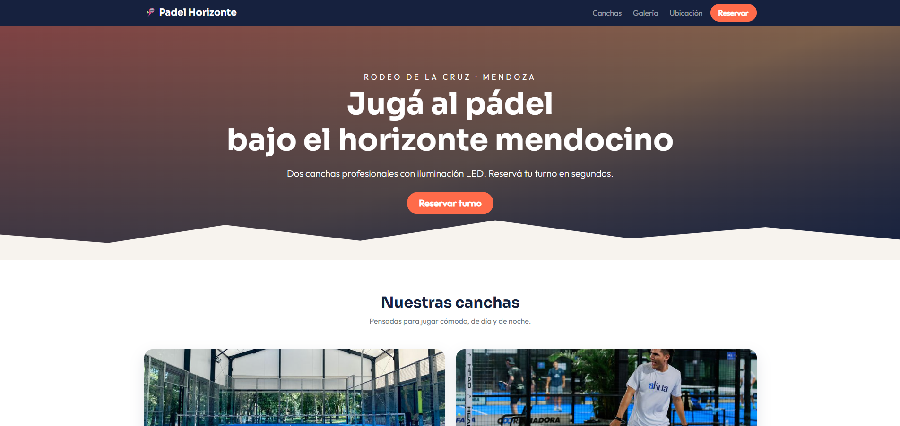

Padel Horizonte

Descripción
Landing page para un complejo de pádel en Rodeo de la Cruz, Mendoza. Permite ver las canchas, recorrer el complejo y reservar un turno desde el celular, sin depender de una llamada telefónica. El complejo no tenía presencia web y los turnos se coordinaban solo por teléfono.
Historia de usuario
Como persona que quiere jugar al pádel, quiero ver el complejo y reservar un turno desde el celular, para no depender de una llamada telefónica en horario comercial.
El gran problema: el complejo no tenía presencia web y los turnos se coordinaban solo por teléfono, lo que hacía perder reservas fuera de horario.
Por qué estas tecnologías
- HTML5: estructura semántica de la landing (secciones de hero, complejo, precios y ubicación).
- Bootstrap 5: resuelve rápido el diseño responsivo (mobile-first) y trae listos el menú hamburguesa, el carrusel y el modal sin escribir JavaScript propio.
Características principales
- Diseño responsivo (mobile-first) con menú hamburguesa que se colapsa en el celular.
- Carrusel navegable con imágenes del complejo (indicadores y flechas).
- Cuadro modal de reserva que abre y cierra, con enlace a WhatsApp.
- Secciones de complejo, precios y ubicación con mapa embebido.
Bitácora de colaboración
Registro del trabajo en equipo, en función de la historia de usuario:
| Fecha | Integrante | Tarea |
|---|---|---|
| 12/05/2026 | Leandro Licata | Relevamiento del complejo y definición de las secciones y del flujo de reserva. |
| 13/05/2026 | Federico Cabrera | Maquetado responsive de la landing: hero, carrusel y modal de reserva. |
| 15/05/2026 | Gonzalo Tapia | Selección de imágenes, paleta, contenido y secciones de precios y ubicación. |
| 16/05/2026 | Gustavo Di Paola | Documentación, pruebas en celular y control de versiones en GitHub. |
Reflexión y resultados
La landing le da al complejo una presencia web propia y un canal de reserva desde el celular, sin depender del teléfono. Practicamos diseño responsivo mobile-first y los componentes de Bootstrap (menú hamburguesa, carrusel y modal).
Resultados cuantitativos: (a completar por el equipo).
Roles del equipo
- Federico Cabrera — Programador
- Leandro Licata — Analista
- Gonzalo Tapia — Diseñador
- Gustavo Di Paola — Documentador
Roles posibles: analista, documentador, diseñador, programador.